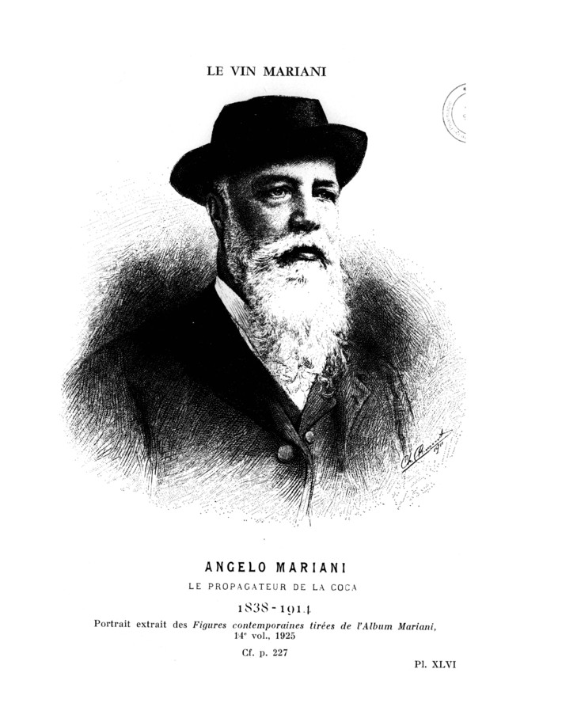
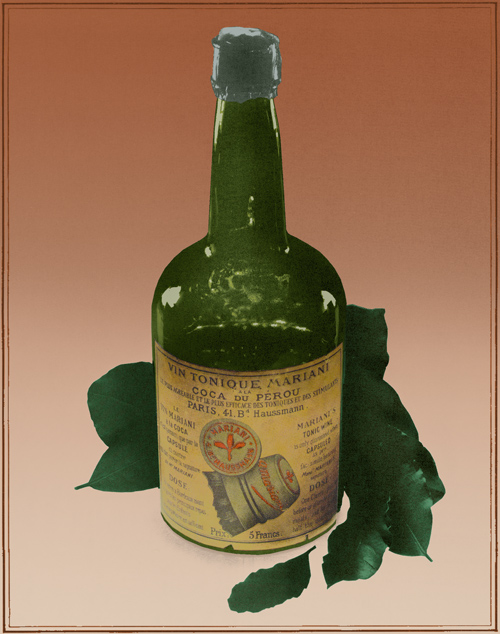
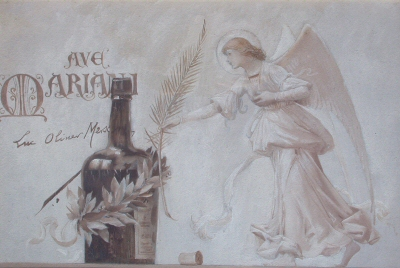
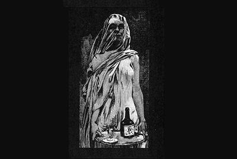
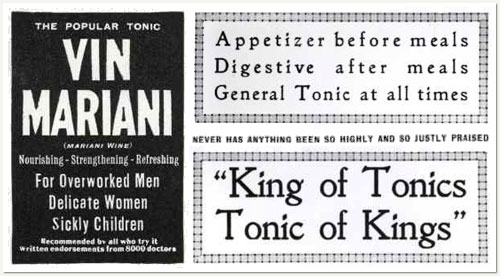
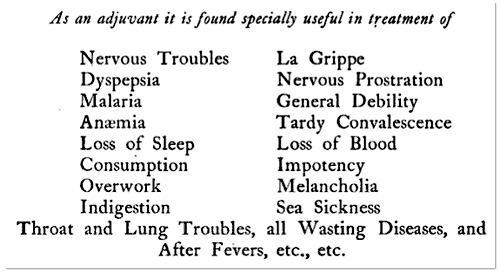
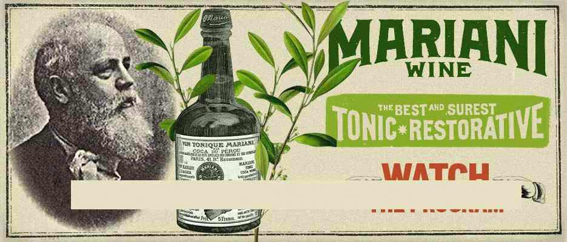
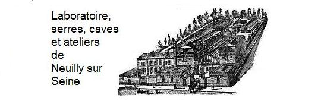

Angelo Mariani, de son vrai nom Ange-François Mariani , est né le 17 décembre 1838, à Pero-Casevecchie, au sein dune famille bourgeoise de médecins et de pharmaciens corses. On ne sait que peu de choses de ses jeunes années, avant quil ne se fasse connaître en tant quinventeur du vin tonique Mariani, lancêtre du coca-cola ! On sait quen 1859, il sinstalla à Paris pour travailler comme chimiste. Cest à ce moment que Mariani a découvert les études de Paolo Mantegazza sur la plante de coca. Il fut ensuite fasciné par la découverte d Albert Niemann : la cocaïne .
|
 Ange-François Mariani 1838 -1914 |
 Le Vin Mariani à la coca du Pérou |
Quelques années plus tard, en 1862, le phylloxéra ravagea la France. Ce petit parasite arriva sur le bétail importé en bateau à vapeur depuis les États-Unis et apparut dabord dans la vallée du Rhône. Il lui fallut moins dune saison pour inonder la vallée, puis gagner la vallée voisine. Puis une autre. Et une autre. Et encore une autre. En moins de dix ans, les vignes françaises furent décimées et la production de vin tomba en chute libre. Cette tragédie modifia la consommation des Français qui se tournèrent davantage vers les spiritueux . Les pousse-cafés, le sherry, et labsinthe remplacèrent le vin. Cest alors quAngelo mis sa fascination pour la coca en bouteille et changea la manière de boire du monde entier. Le vin de hissait au rang de médicament!



Des publicités d'un goût douteux: "Ave Mariani" et "Le tonique qui réveille les momies"
En 1863 , alors âgé de seulement 25 ans, Mariani commercialisa un médicament breveté quil baptisa Vin Tonique Mariani à la Coca du Pérou . Composé dune infusion de 3 variétés de feuilles de coca dans du vin de Bordeaux, le Vin Tonique Mariani fut immédiatement salué comme
La dose recommandée était de deux ou trois verres de vin par jour bus 30 minutes avant ou juste après le repas. Chaque verre de 30 ml de vin Mariani contenait 6 milligrammes de principe actif, la cocaïne !
Laboratoires et bureaux


Le roi des toniques aux innombrables indications
Autres spécialités


Mariani ne sest pas arrêté à ce simple succès.
Mais aucun autre produit ne reçut autant de louanges que le Vin Tonique Mariani.